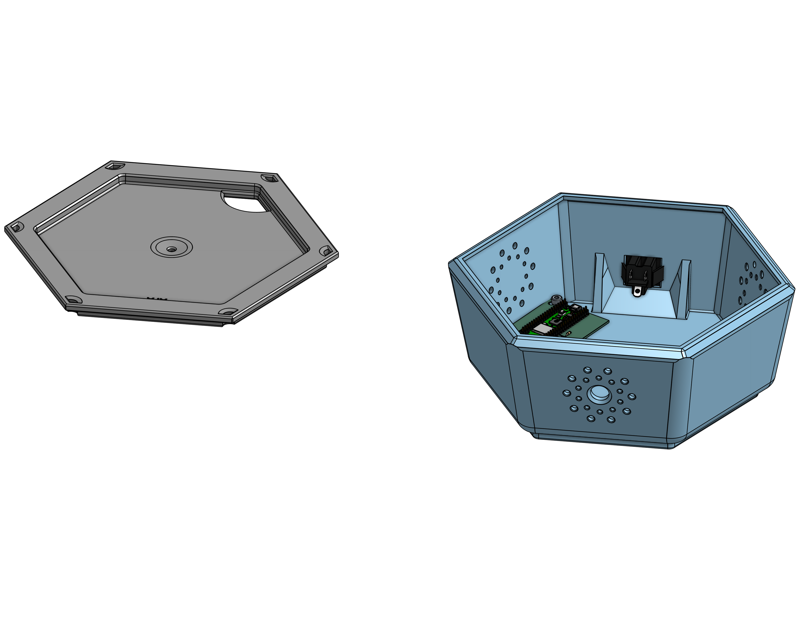
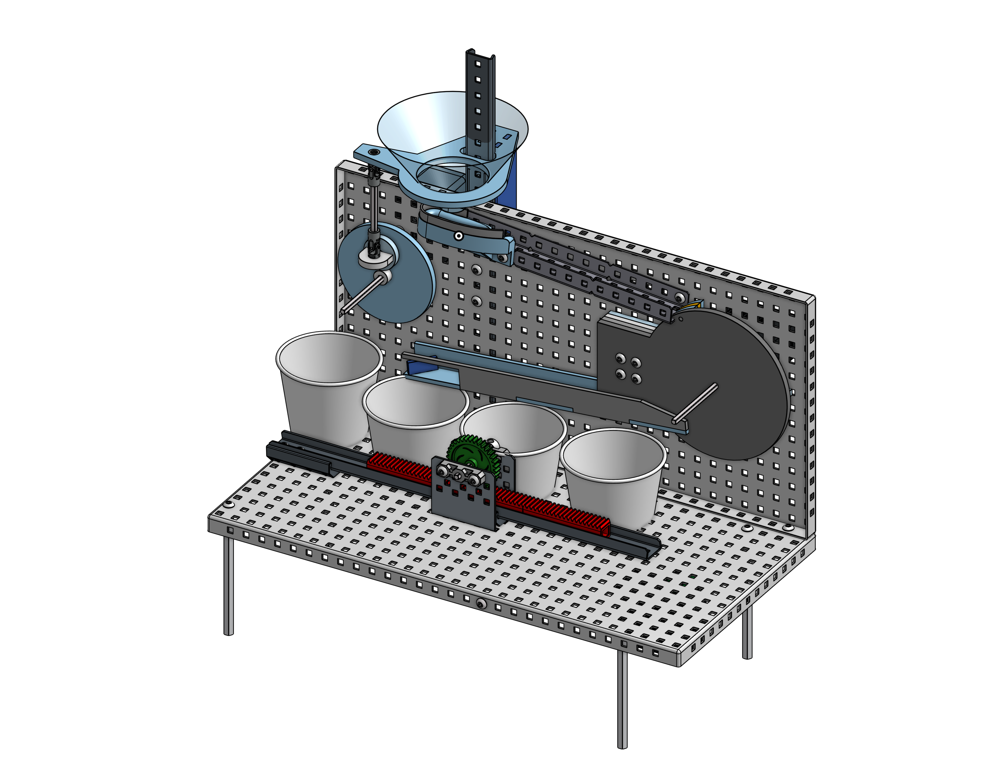
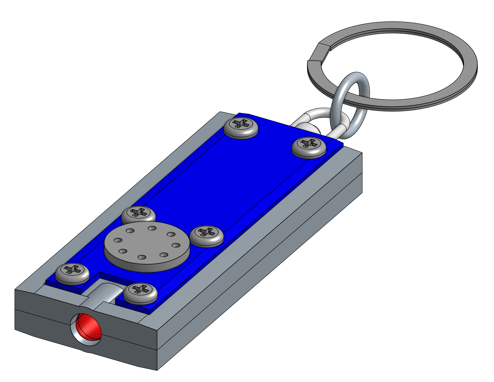

PAST PROJECTS

LAUNDROMAT IOT USAGE MONITOR
IoT and Product Design
Developed a current monitoring system using microcontrollers to keep track of usage, cycles, and availability. Displayed webpage on local network for users.

MARBLE SORTER
Real-Time Data Processing
Used the VEX platform to record the opacity and reflectiveness of different marbles to sort them by attribute. Wrote code to verify accuracy and move catching bins to the correct locations.

FLASHLIGHT
Reverse Engineering with SolidWorks, OnShape, and Dial-Calipers
Disassembled, measured, and documented the parts of a keychain flashlight to create a digital CAD replica of each and every part of the product.
ABOUT ME
I am a Mechanical Engineering student at UCI looking for relavent industry experience. Interested in applications of mechanics and software, in for example: robotics, aerospace, automotive, and medical usages.
I have a strong background in communication, documentation, and teamwork due to my extracirricular project experience. I've learned to read GD&T, CAD-model, and use CAM for machining. I am also proficient in Python and MATLAB.